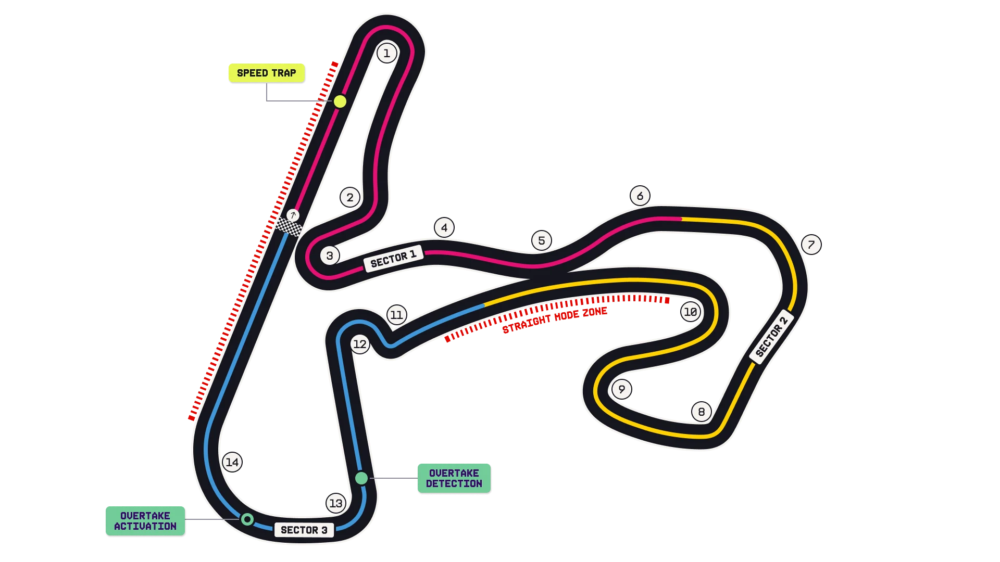

Circuit Zandvoort Guide
A banked, old-school rollercoaster squeezed into the dunes. Narrow, relentlessly cambered and almost entirely blind — the corners fall away and climb back at you, and the wind off the North Sea changes the balance session to session.
Circuit map

Corners that matter
Turn 3 — Hugenholtzbocht
Steeply banked (18°) hairpin; cars can run two abreast on different lines, which is what makes the banking more than a gimmick.
Turns 7–8 — Scheivlak
Fast, downhill, blind right. Genuinely intimidating and the corner drivers talk about all weekend.
Turn 14 — Arie Luyendijkbocht
The final banked (18°) right that launches the cars onto the pit straight — get it wrong and the DRS run to Turn 1 is lost.
Where the passes happen
Hard. Effectively one real passing place — into Turn 1 out of the banked final corner, with DRS. Track position and the undercut usually decide it, which is why strategy and safety-car timing carry so much weight here.
What it does to the tyres
High-energy, continuous loading with very little straight-line rest, so front-left and rear temperatures build. Graining on the softer compounds is the usual complaint; track evolution across the weekend is strong.
Worth knowing
Circuit notes
- Zandvoort's first World Championship Grand Prix was in 1952; it returned in 2021 after a 36-year absence.
- The 2026 race is scheduled to be one of the venue's last under its current deal — expect plenty of farewell framing.
- Grandstands are famously orange and the crowd noise is a genuine broadcast feature.